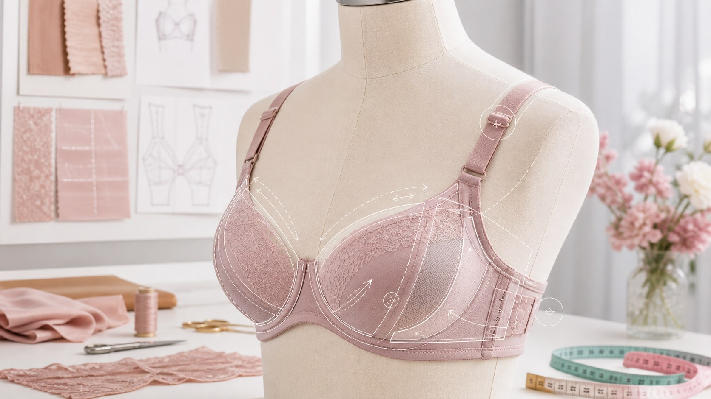

日常美化穿搭
内衣尺码与合身判断｜合身，就是穿了像没穿一样
尺码不是越小越显瘦、越大越丰满的标签。它只是帮你找到承托与舒适的第一条线索，真正靠得住的是身体的感觉。

很多人买内衣时，最早记住的就是「尺码」两个字。但这件事恰恰最容易被误解。尺码不是用来证明你有多小、或多大的标签，而是帮你找到承托和舒适的工具。也许你曾被某个字母或数字鼓励过、也忐忑过，其实没关系，身体每天都在悄悄变化，尺码只是某个时刻的参考，绝不是你的名字。
判断一件内衣合不合身，先看底围。底围是环绕身体最宽处的一圈，它承担着大部分承托工作。合适的底围，应当稳稳贴合、能塞进两根手指、也不在皮肤上勒出痕迹。太松，内衣容易往上跑，支撑就空了；太紧，一整天都在跟勒痕较劲。试穿时不妨抬抬手、转转身，感受它是否跟着你的身体安稳移动。
再看罩杯。罩杯的任务，是把胸部完整地包裹好。合适的罩杯，边缘服帖，不压胸也不空杯，抬手时不至于往前移动。如果罩杯上方有空隙，往往说明它偏大；如果上缘勒进肉里、或胸部挤得不舒展，多半偏小。这些细节，比任何数字都诚实。
肩带很细，却藏着很多舒适度。合适的肩带，能温和地承托，又不至于在肩膀上压出红印。不少人习惯把肩带调得很紧，以为这样更稳，其实反而让脖子和肩膀更累。肩带以能分担、不勒肩为准，抬手时只要不滑落，就是合适的松紧。好的肩带，是会让你忘了它存在的。
量体与试穿，才是一切的前提。内衣的尺码会因为品牌、款式、个人状态而不同，千万别只凭一个早年记住的尺码就下单。最稳妥的做法，是量一量身体，再认认真真试穿。试衣时不必害羞，多试几件、动动身体，找到那件穿了像没穿一样的，才算真正合适。旧内衣用久了会松，隔段时间重新核对照样重要。
说到底，合身不是为了让自己显得如何，而是为了让身体自在。一件真正合身的内衣，穿上应是安稳和舒展，而不是时刻惦记着调整。别把尺码当成身材的判断题，它只是帮你找到舒适伙伴的小线索。慢慢来，找到属于你的那一件，你会懂我说的。
本文用于公众健康教育，不构成医疗建议，不替代面诊。医美决策请与具备资质的医师面诊后作出。